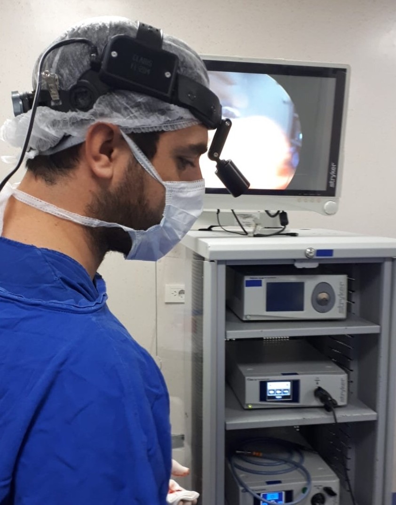
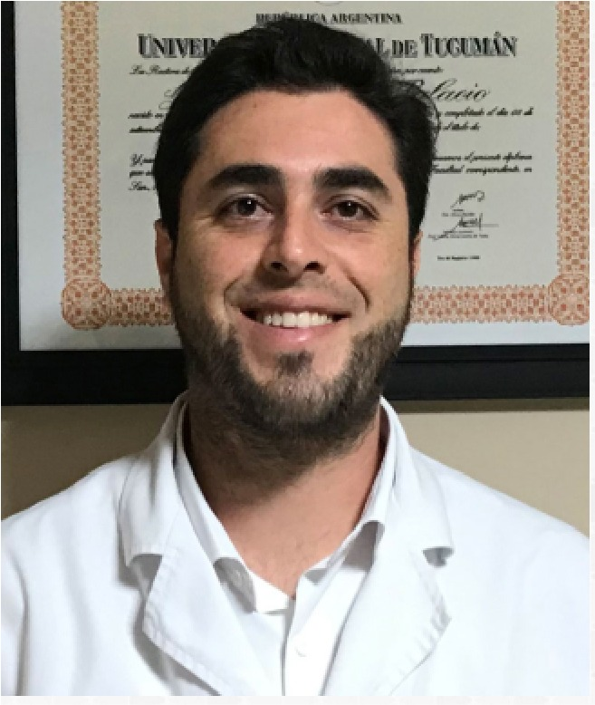
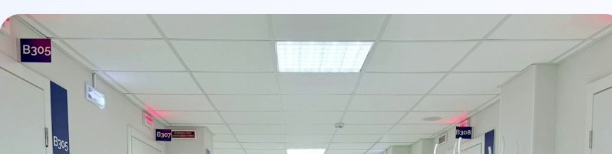
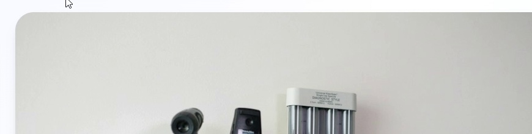
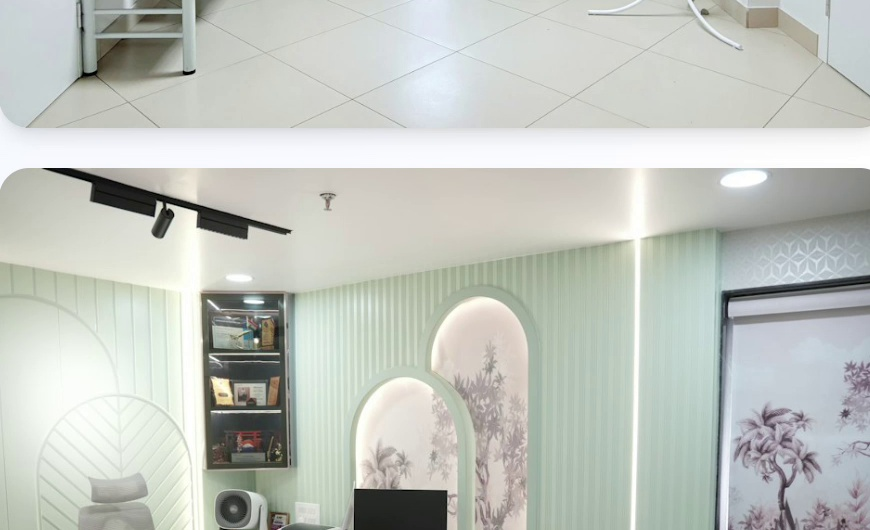

Compromiso
Una atención responsable y dedicada al bienestar de cada paciente.
Como especialista en otorrinolaringología, te ofrezco una atención cercana y personalizada, respaldada por tecnología de vanguardia y más de 10 años de experiencia al cuidado de tu bienestar.

Una trayectoria al servicio de la salud

Con más de 10 años de experiencia en otorrinolaringología, he dedicado mi carrera a cuidar la salud del oído, la nariz, la garganta y la voz, brindando una atención médica de excelencia con un enfoque cercano y humano.
Mi formación especializada y actualización constante en los avances de la disciplina me permiten ofrecer diagnósticos precisos y tratamientos personalizados para cada paciente.
Creo que la medicina va más allá de aliviar síntomas: implica escuchar, comprender y acompañar a cada persona para encontrar la mejor solución y alcanzar un bienestar integral.
Una atención responsable y dedicada al bienestar de cada paciente.
Escucha, acompañamiento y atención personalizada.
Formación continua y actualización en los avances de la especialidad.
Más de 10 años dedicados al cuidado de la salud otorrinolaringológica.
Formación profesional y experiencia que respaldan una atención especializada.
Formación médica y preparación profesional.
Formación y experiencia hospitalaria vinculada a la especialidad.
Formación y actualización profesional en una institución de referencia.
Experiencia relacionada con la atención otorrinolaringológica.
Formación profesional, recertificación y pertenencia a instituciones vinculadas a la especialidad.
Consejo de Certificación y Recertificación de Especialidades Médicas.
Miembro de la Sociedad Tucumana de Otorrinolaringología.
Miembro de la Federación Argentina de Sociedades de Otorrinolaringología.
Miembro del Círculo Médico del Sur.
Atención médica integral con tecnología de vanguardia y trato personalizado.
Evaluación especializada de garganta, nariz y oído para lograr diagnósticos precisos.
Procedimientos de otorrinolaringología para garganta, nariz y oído, con evaluación personalizada.
Garganta, nariz y oído
Atención personalizada para evaluar síntomas, realizar diagnósticos y definir el tratamiento adecuado para cada paciente.
La confianza de nuestros pacientes es parte fundamental de nuestra atención.
“Excelente atención, muy profesional y siempre dispuesto a explicar cada detalle.”
“Una atención muy cálida y profesional. Me sentí acompañado durante todo el proceso.”
“Muy recomendable. La atención fue excelente y me brindó mucha tranquilidad.”
Pacientes satisfechos con la atención recibida.
Valoraciones positivas de nuestros pacientes.
Pacientes que recomiendan la atención.
Acompañamiento y seguimiento de cada paciente.
Instalaciones modernas diseñadas para brindarte comodidad y confianza.
Fácil acceso y estacionamiento.
Protocolos de higiene estrictos.
Equipos de última generación.
Espacios diseñados para tu bienestar.



Agendá tu cita o contactanos para resolver tus dudas. Estamos para servirte.
24 de Septiembre 2070
Concepción, Tucumán
C.P. 4146
Tel. fijo:
3865 425356
WhatsApp:
3865 76-2230
Lunes, martes, jueves y viernes
16:00 a 21:00 hs.